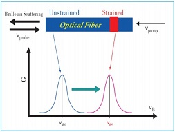

-
- 联系我们contact us
-
- 服务热线：021-64950510
- 邮件：sunmei@vip.163.com

-
-
- 架空、隧道输电高压线路在线监测方案
- 输电线路是电力系统的主干网络，建立一个“坚强”的智能电网，保证安全可靠的电力供应，输电线路的安全运行是关键环节。统一的“坚强”智能电网离不开“坚强”且“智能”的输电线路，尤其是特高压输变电线路。
- 上海霍开公司提出的高压输电线路在线监测方案依托本公司开发的智能电缆，采用分布式光纤测量技术实时采集输电线路的温度、应变、振动，并对采集到的异常数据实时发出报警。解决了传统的电缆识别靠人工或者电子标签等手段容易形成误判和失效的问题，可节约大量的人力成本和减少误识别几率。
-
- 城市智慧管廊运行平台建设方案
- 城市智慧综合管廊是把市政、电力、通讯、燃气、给排水、热力等各种管线集于一体，在城市道路地下空间建造一个集约化的公共隧道。实行“统一规划、统一建设、统一管理”，做到地下空间的综合利用和资源共享。
- 上海霍开光电技术有限公司致力于提供“互联网+智慧综合管廊”整体解决方案，充分利用云计算、大数据、物联网、GIS、BIM等高新技术，建设以“安全服务、智能运维、高效管理、应急指挥”为核心内容的智慧化平台，实现综合管廊的数字化、信息化和智能化管理。公司开发的综合管廊三维集成与管控系统在BIM、2DGIS、3DGIS、全景等技术的支持下，真实再现综合管廊三维环境，负责将综合管廊各个监控子系统进行综合集成，实现数据融合，实现联动报警，并可进行联动控制和综合管廊安全评价。
-
- 机房红外智能监控方案
- 机房动力及环境监控系统是对分布的各个独立的动力设备和机房环境监控对象进行遥测、遥信等采集，实时监视系统和设备的运行状态，记录和处理相关数据；实现基站的少人无人值守，以及电源、空调的集中监控维护管理，提高供电系统的可靠性和通信设备的安全性。特别是对对蓄电池、机房设备状态的温度监控是保证机房设备正常运行不可缺少的环节。
- 机房红外智能监控方案是由上海霍开光电技术有限公司根据机房温度监控的需求，专门自主研发的一套新型物联网温度监控系统。该系统采用精确的物理模型、优化的测温算法、标定方法和独创低分辨率补偿算法，无论在-20°C低温的还是 50°C高温气候，均能保证低分辨率热像仪，在整个环境温度范围内全像面准确测温。
- 
-
- 基于分布式光纤传感器技术
- 经过 10 多年的发展，上海霍开为客户创造了多项技术创新，将光纤传感技术带入设计院、大学、国家电网、南方电网和多家电缆、电厂等企业。我国首条220KV智能高压电缆在线监测系统由我公司总工程师王章军先生缔造。
- DTS分布式光纤温度传感器是根据光纤的光时域反射（OTDR）和光纤Raman散射的温度效应设计，用来实时检测光纤不同位置的温度，实现分布式的温度测温的先进仪器。
- 光纤振动监控系统以光的干涉现象为基本原理。它以普通通讯光缆本身作为传感单元，当某处光纤受到外界扰动时，光干涉现象中的参量将发生变化，通过高速信号采集与数据处理技术，对光缆触碰、挤压、和振动的快速感应可以实现对线路进行监测，准确地定位发生扰动的位置并进行分析。
- 布里渊光时域分析仪BOTDA基于受激布里渊Brillouin散射效应, 可实现沿光纤分布的温度、应变测量。是国际上最先进的分布式光纤传感器，性能优异、技术难度大，在霍开之前仅有日本、加拿大、瑞士等国外厂家以及国内少数单位及厂商可提供产品。
-
- 基于荧光光纤测温探头测温技术
- 电力环网柜数量众多，分布范围广泛，是城市6~10KV供电网络的重要组成部分和控制接点，环网柜的运行状态，直接关系到城市供电系统的可靠性。环网柜内空间相对狭小，设备长时间带负荷运行，环境温度和电气接点温度容易偏高，如果不及时处理可能导致着火或爆炸事故，为保证安全运行，目前电力检修人员需要定期对环网柜进行温度检测，工作量大，准确度低。
- 上海霍开光电技术有限公司基于荧光光纤测温探头测温技术，开发了霍开环网柜荧光测温系统。 本系统主要针对变电站环网柜内部触点及接点的异常温度变化进行实时在线监测。借助这套系统，用户可以在本地和远程上位机上实时监测开关柜内重点部位的温度变化情况，根据温度变化情况实时的发出告警信息（预警、报警和超限）。同时借助强大的上位机功能，可以分析温度变化周期，查看实时、历史曲线，预测警情变化等功能，还可以实现多用户远程数据交换。
-
- 高能扫描层析分析技术方案（工业CT）
- 本技术方案采用高频双焦点 X 射线源、高分辨率非晶硅面阵列探测器、高精度精密扫描平台、锥束射线开放式扫描构建 3D Micro-CT(Three Dimensional Micro-Computed Tomography)扫描成像系统。该系统通过高清晰投影实现对被扫描样品的高分辨率DR(Digital Radiography)成像，利用专用三维快速重建以及可视化建模软件，实现对样品的层析成像以及内部三维信息的可视化，同时借助软件的辅助分析功能，实现对物体的快速 CT 质量检测及尺寸测量等。
- 霍开 X 射线 CT 检测产品水平居国内领先地位，经用户多年在多种场合用于检测多种被检测物都得到了非常满意的效果。
-
- 高压电缆局部放电在线监测方案
- 随着我国电力事业不断发展，装机容量大幅度增加，尤其是城区电缆入地工程的开展，交联聚乙烯（XLPE）电缆在电网建设与电网改造中得到越来越广泛的应用。XLPE电缆及接头因为施工工艺问题，或达到一定年限以后，常常会发生绝缘被击穿而造成事故，从而造成重大经济损失。为确保输电网络的安全，对XLPE电缆进行局部放电在线监测是目前公认的有效预防电缆故障的方法。局部放电监测一直是电缆绝缘（特别是塑料电缆）非破坏性电气检验的主要项目，越来越被看作是一种最有效的绝缘诊断方法，目的是观察和研究局部放电引起的绝缘老化问题。
- 本公司的高压电缆局部放电在线监测方案采用模块化设计，通过安装在电缆接头接地线上的高频电流传感器，来耦合电缆本体及接头处的局部放电脉冲电流信号；耦合到的脉冲电流信号通过同轴电缆传送至前端监测采集器，对模拟信号经过放大、滤波、模数转换后变成数字信号再通过光纤传送至测试主机。测试主机对所有传感器的信号分别进行分类识别分析、计算，并将这些通过计算获得的放电信息数据写入到数据库中，同时在监测系统的软件面板上显示监测结果。
-